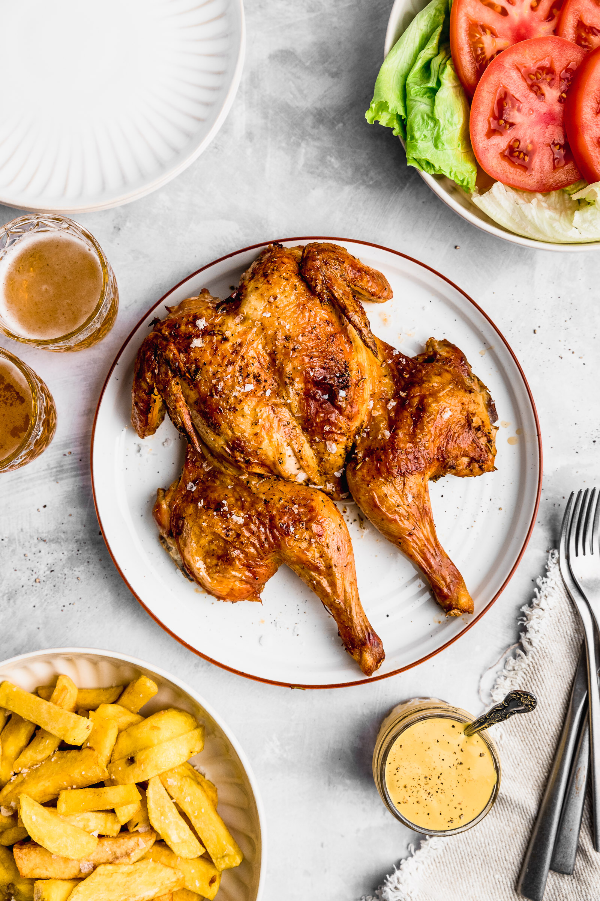

Home
Receta del Pollo a la Brasa

Descripción
El pollo a la brasa es un jugoso pollo asado al carbón o a la leña mediante un sistema rotatorio, caracterizado por su piel dorada y crujiente.
Nació en el año 1950 en el fundo La Granja Azul ubicado en Santa Clara, Chaclacayo (Lima), gracias al ingenio del inmigrante suizo Roger Schuler
Ingredientes:
- 1 pollo entero (de 1.5 a 2kg).
- 3 cucharadas de ajo molido.
- 2 cucharadas de aji panca molido.
- 1/2 taza de sillao(salsa de soya).
- 1 taza de cerveza negra.
- 2 cucharadas de sal.
- 1 cucharadita de pimienta negra.
- 1 cucharadita de comino.
- 1 cucharadita de oregano seco.
- 1 cucharadita de romero seco.
- 1 cucharadita de vinagre tinto o blanco.
- 2 cucharadas de mantequilla(para untar al final).
Pasos de preparación
- Limpie el pollo por dentro y por fuera, luego sécalo con papel absorbente.
- Prepara el aderezo, mezclando en un tazón el ajo, aji panca, sillao, cerveza negra, sal, pimienta, comino, oregano, romero y vinagre.
- Macera el pollo embadurnandolo con toda la mezcla, asegurse de levantar con cuidado la piel para untar el aderezo también por debajo, directamente sobre la carne.
- Refrigere el pollo por al menos unas 5horas, pero lo ideal es dejarlo macerar por toda la noche para que absorva bien los sabores.
- Precaliente el horno a 180°C(350°F).
- Hornea el pollo colocado sobre una rejilla o bandeja con la pechuga mirando hacia arriba durante unos 50 a 60min. Pásale un poco de mantequilla o jugos de la bandeja a mitad de la cocción.
- Dora la piel subiendo la temperatura o usando la funcion grill del horno durante los ultimos 10 minutos hasta que quede crujiente y dorado.
- Sirve caliente acompañado de papas crocantes, ensalada fresca y una clasica crema de aji de polleria.